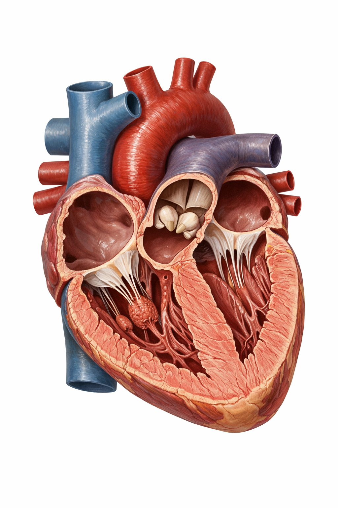

About 60% of the human body is water. This water is distributed into two main compartments:
Intracellular fluid (ICF): Water inside cells. This makes up about two-thirds of total body water.
Extracellular fluid (ECF): Water outside cells. This makes up the remaining one-third and includes:
Interstitial fluid: The fluid that bathes cells in tissues. It delivers nutrients and removes waste at the cellular level.
Plasma: The liquid component of blood within blood vessels (about 55% of blood volume).
Other: lymph, cerebrospinal fluid, synovial fluid, etc.
Heart Structure
The heart is a muscular pump roughly the size of a fist, located in the mediastinum (the central compartment of the thoracic cavity, slightly to the left). It is surrounded by a double-walled sac called the pericardium.
Heart Wall Layers
The heart wall consists of three layers:
Epicardium (outermost): Also called the visceral pericardium, this thin serous membrane covers the outer surface of the heart.
Myocardium (middle): The thick muscular layer responsible for the heart's contractile force. It is thickest in the left ventricle.
Endocardium (innermost): A smooth endothelial lining continuous with the endothelium of blood vessels. It covers the heart valves and provides a frictionless surface for blood flow.
Coronary Circulation
The coronary arteries are the very first branches of the ascending aorta, arising just above the aortic valve. The left coronary artery divides into the left anterior descending and circumflex arteries, while the right coronary artery supplies the right side of the heart and the inferior wall of the left ventricle. Blockage of these arteries (usually by atherosclerotic plaque) causes myocardial infarction (heart attack).
The Four Chambers and Valves
The heart has four chambers divided into right and left sides by the septum:
Right atrium (RA): Receives deoxygenated blood from the body via the superior and inferior vena cava.
Right ventricle (RV): Pumps deoxygenated blood to the lungs through the pulmonary trunk.
Left atrium (LA): Receives oxygenated blood from the lungs via four pulmonary veins.
Left ventricle (LV): Pumps oxygenated blood to the entire body through the aorta. It has the thickest wall because it must generate the highest pressure.
Four valves ensure one-way blood flow:
Tricuspid valve: Between RA and RV (has three flaps).
Pulmonary (semilunar) valve: Between RV and pulmonary trunk.
Mitral (bicuspid) valve: Between LA and LV (has two flaps). This is the only valve with two flaps.
Aortic (semilunar) valve: Between LV and aorta.

Figure 25.1 — Anatomy of the human heart (anterior cross-section) showing chambers, valves, and major vessels.
Blood Circulation: Pulmonary and Systemic Circuits
The circulatory system operates as two connected loops:
Pulmonary circulation (right side of heart → lungs → left side): Deoxygenated blood leaves the right ventricle through the pulmonary arteries, travels to the lungs where it picks up oxygen and releases carbon dioxide, then returns as oxygenated blood to the left atrium via pulmonary veins.
Systemic circulation (left side of heart → body → right side): Oxygenated blood leaves the left ventricle through the aorta, delivers oxygen to all body tissues, picks up carbon dioxide, and returns as deoxygenated blood to the right atrium via the superior and inferior vena cava.
Important note: Arteries carry blood AWAY from the heart (not necessarily oxygenated). Veins carry blood TOWARD the heart. In the pulmonary circuit, arteries carry deoxygenated blood and veins carry oxygenated blood — the opposite of the systemic circuit.
The Cardiac Cycle
One complete heartbeat is called a cardiac cycle and consists of:
Atrial systole: Both atria contract simultaneously, pushing blood into the ventricles.
Ventricular systole: Both ventricles contract, pushing blood into the pulmonary trunk and aorta. The AV valves (tricuspid and mitral) close, producing the first heart sound ("lub").
Diastole: All chambers relax. The semilunar valves close, producing the second heart sound ("dub"). Blood refills the atria.
The heart generates its own electrical signals. The sinoatrial (SA) node, located in the right atrium wall, is the natural pacemaker. It fires spontaneously about 60-100 times per minute. The signal spreads through both atria, then reaches the atrioventricular (AV) node, which briefly delays it (allowing the atria to finish emptying), and then the signal travels down the Bundle of His, splits into left and right bundle branches, and finally reaches the Purkinje fibers which stimulate the ventricles to contract from the bottom up.
Blood Pressure and Its Regulation
Blood pressure is the force that blood exerts on the walls of blood vessels. It is measured in millimeters of mercury (mmHg) and expressed as systolic/diastolic (e.g., 120/80 mmHg). Systolic pressure is the peak pressure during ventricular contraction; diastolic is the lowest pressure during relaxation.
Blood pressure is regulated by:
Neural control: The autonomic nervous system adjusts heart rate and blood vessel diameter. The sympathetic system increases heart rate and constricts vessels (raises BP); the parasympathetic system (vagus nerve) slows heart rate (lowers BP).
Hormonal control: The renin-angiotensin-aldosterone system (RAAS) raises blood pressure by constricting blood vessels and increasing water and sodium reabsorption in the kidneys. Antidiuretic hormone (ADH/vasopressin) also increases water reabsorption. The heart itself acts as an endocrine organ: when its walls are stretched by increased blood volume, atrial cardiomyocytes release atrial natriuretic peptide (ANP) and ventricular cardiomyocytes release brain natriuretic peptide (BNP). Both promote vasodilation, increase renal sodium and water excretion, and inhibit RAAS, collectively lowering blood pressure.
Local control: Tissues can regulate their own blood flow by releasing vasodilators (like nitric oxide) when they need more oxygen.
Capillary Exchange and Starling Forces
Fluid movement across capillary walls is governed by the balance of four pressures known as Starling forces:
Capillary hydrostatic pressure (pushes fluid out of the capillary into tissues).
Interstitial hydrostatic pressure (pushes fluid back into the capillary).
Plasma oncotic (colloid osmotic) pressure (pulls fluid into the capillary, mainly generated by albumin).
Interstitial oncotic pressure (pulls fluid out of the capillary).
At the arteriolar end of a capillary, net filtration drives fluid into the tissues. At the venular end, net reabsorption pulls most fluid back. Although capillaries hold only about 5–7% of total blood volume at any moment, their enormous total surface area (estimated at 500–700 m2) and slow flow rate allow ample time for nutrient and waste exchange.
Blood Components
Plasma (~55% of blood volume)
A straw-colored liquid that is about 90% water. Contains dissolved proteins (albumin maintains osmotic pressure; globulins include antibodies; fibrinogen is needed for clotting), electrolytes, nutrients, hormones, waste products, and dissolved gases.
Red Blood Cells (Erythrocytes)
Biconcave disc-shaped cells that lack a nucleus (in mammals) and most organelles. This shape maximizes surface area for gas exchange. They contain hemoglobin, an iron-containing protein that binds oxygen (forming oxyhemoglobin) in the lungs and releases it in tissues. Normal lifespan: about 120 days. Old RBCs are removed by the spleen and liver.
White Blood Cells (Leukocytes)
Nucleated cells that defend the body against infection. There are five main types divided into two groups:
Granulocytes (have visible granules in cytoplasm):
Neutrophils (~60-70% of WBCs): First responders to bacterial infections. They engulf and digest bacteria (phagocytosis).
Eosinophils (~1-4%): Combat parasitic infections; involved in allergic reactions.
Basophils (~<1%): Release histamine and heparin; involved in allergic and inflammatory responses.
Agranulocytes (no visible granules):
Lymphocytes (~20-30%): B cells produce antibodies; T cells attack infected cells directly; Natural killer (NK) cells destroy virus-infected and tumor cells.
Monocytes (~3-8%): Enter tissues and become macrophages, which phagocytose pathogens and dead cells.
Platelets (Thrombocytes)
Small cell fragments (not true cells) derived from large bone marrow cells called megakaryocytes. Platelets are essential for blood clotting (hemostasis). When a blood vessel is damaged, platelets aggregate at the site and form a plug, then a cascade of clotting factors produces a fibrin mesh that stabilizes the clot.
Hematopoiesis
Hematopoiesis is the production of all blood cells. In adults, it occurs primarily in the red bone marrow of flat bones (pelvis, sternum, ribs, skull) and the ends of long bones. All blood cells originate from a single type of pluripotent hematopoietic stem cell, which can differentiate into:
The myeloid lineage: gives rise to red blood cells, platelets, neutrophils, eosinophils, basophils, and monocytes.
The lymphoid lineage: gives rise to lymphocytes (B cells, T cells, NK cells).
Red blood cell production is stimulated by the hormone erythropoietin (EPO), which is produced mainly by the kidneys in response to low blood oxygen levels. White blood cell production is stimulated by various colony-stimulating factors (CSFs) and interleukins.
Blood Groups
ABO System
Blood type is determined by the presence or absence of specific antigens (sugar molecules) on the surface of red blood cells:
Blood Type
Antigen on RBCs
Antibodies in Plasma
Can Donate To
Can Receive From
A
A antigen
Anti-B
A, AB
A, O
B
B antigen
Anti-A
B, AB
B, O
AB
A and B antigens
None
AB only
A, B, AB, O (universal recipient)
O
Neither
Anti-A and Anti-B
A, B, AB, O (universal donor)
O only
If a person receives blood with incompatible antigens, their antibodies will attack the foreign RBCs, causing agglutination (clumping) and potentially fatal hemolysis (cell destruction).
Rh System
The Rh factor is another antigen (the D antigen) on RBCs. People who have it are Rh positive (Rh+); those who lack it are Rh negative (Rh−). Rh− individuals do not naturally have anti-Rh antibodies, but they will produce them if exposed to Rh+ blood.
This is clinically important during pregnancy: if an Rh− mother carries an Rh+ baby, her immune system may produce anti-Rh antibodies that can attack the baby's RBCs in subsequent pregnancies (hemolytic disease of the newborn). This is prevented by administering anti-D immunoglobulin (RhoGAM) to the mother.
Common Cardiovascular Diseases
Atherosclerosis: Buildup of fatty plaques (cholesterol, calcium, fibrous tissue) in artery walls, narrowing the vessel and reducing blood flow. The underlying cause of most heart attacks and strokes.
Myocardial infarction (heart attack): Death of heart muscle due to blocked coronary artery blood supply, usually from a ruptured atherosclerotic plaque and subsequent blood clot.
Stroke (cerebrovascular accident): Disruption of blood supply to part of the brain. Ischemic stroke (blocked vessel) or hemorrhagic stroke (burst vessel).
Hypertension: Chronically elevated blood pressure (≥140/90 mmHg). A major risk factor for heart disease, stroke, and kidney damage.
Heart failure: The heart cannot pump enough blood to meet the body's needs. Can be left-sided (pulmonary congestion) or right-sided (systemic congestion/edema).
Anemia: Reduced oxygen-carrying capacity of blood, either due to fewer RBCs or reduced hemoglobin. Causes include iron deficiency, vitamin B12 deficiency, and chronic disease.
Lymphatic System and Spleen
The lymphatic system is a network of vessels and organs that runs parallel to the venous system. It has three main functions:
Fluid recovery: About 3 liters of fluid leak from capillaries into tissues each day and is not reabsorbed by venous capillaries. Lymphatic vessels collect this excess interstitial fluid (now called lymph) and return it to the bloodstream via the thoracic duct and right lymphatic duct, which drain into the subclavian veins.
Fat absorption: Specialized lymphatic vessels in the small intestine called lacteals absorb dietary fats.
Immune defense: Lymph passes through lymph nodes where it is filtered and monitored by immune cells (lymphocytes and macrophages). Swollen lymph nodes during an infection indicate active immune responses.
The spleen is the largest lymphoid organ. Located in the upper left abdomen, it:
Filters blood (removes old/damaged RBCs and pathogens)
Stores platelets and monocytes
Produces lymphocytes and antibodies (especially important in fighting encapsulated bacteria)
Mnemonic: Cardiac Conduction Pathway
"SA → AV → Bundle of His → Bundle Branches → Purkinje"
SA node is the pacemaker. Conduction: SA → AV → Bundle of His → bundle branches → Purkinje fibers.
Blood = plasma (55%) + formed elements (45%): RBCs (O₂ transport), WBCs (defense), platelets (clotting).
ABO blood types defined by surface antigens. Type O = universal donor; AB = universal recipient.
Lymphatic system recovers excess fluid, absorbs fats, and supports immunity.
Test Yourself — Chapter 25
Trace the path of a red blood cell from the right atrium through the pulmonary and systemic circuits and back to the right atrium. Name every chamber, valve, and major vessel it passes through.
A person with blood type B receives a transfusion of type A blood. What will happen and why?
What are the three main functions of the lymphatic system?